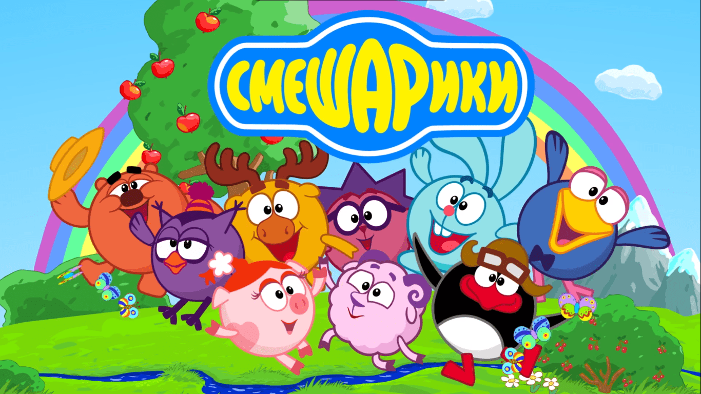

Это текст моей первой страницы
Это гиперссылка на сайт Консорциума Всемирной паутины
Хотитекоротенькуюсказочкунаночь?Одинмойдруг почувствовал,чтоунегомеждуочкамииглазомзастрялволосок.Онникакнемоготнегоизбавиться,поэтомупосмотрелвзеркало. По его глазному яблоку полз клещ. Спокойной ночи, сладких всем снов!
Врачи сказали пациенту, что после ампутации возможны фантомные боли. Но никто не предупредил о том, как холодные пальцы ампутированной руки будут чесать другую.